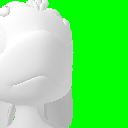
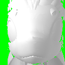

1. Pick an animation
AvaliJAM 
Mindblow 
2. Input your textures (Da'vali textures)
light
dark
mapper
mapper2
Feathers 2
Body
Eyes
3. Create your GIF animation
Animate
4. Optimize and/or resize
https://ezgif.com/resize
https://ezgif.com/optimize
Credits
The Da'vali model is available on the
Avali Army Discord
The technical details of this page were inspired by and modelled after
MakeSweet
, an online gif generator